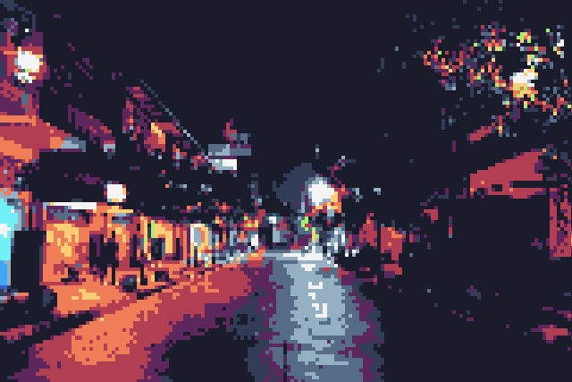
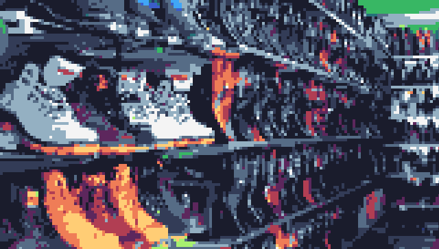
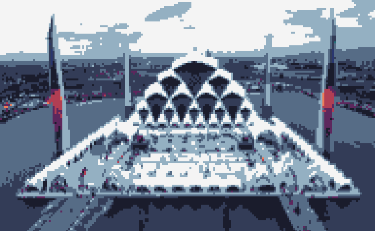
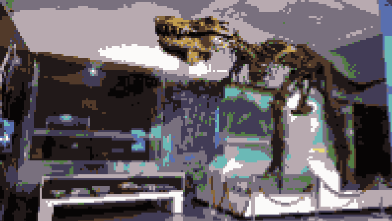
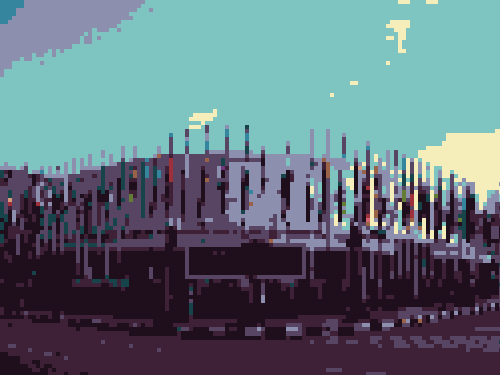

 |
Braga City WalkBraga City Walk in Bandung is a lively district famous for its historical charm and contemporary attractions. This area offers a mix of old-world architecture and modernamenities, making it a popular spot for both locals and tourists. Visitors can explore vintage buildings, dine at trendy restaurants, sip coffee in stylish cafes, and enjoy a vibrant nightlife scene. It's a vibrant hub that beautifully blends the past and present, making it a must-visit when in Bandung. |
 |
Cibaduyut StreetCibaduyut Street in Bandung, Indonesia, is a well-known hub for footwear and leather goods. It's often referred to as "Cibaduyut Shoe Street." This vibrant and bustling street is lined with numerous shops and stalls that offer a wide variety of shoes, boots, sandals, and leather products at affordable prices. Shoppers can find both locally made and imported shoes, and many shops even offer custom-made leather products. |
 |
Al-Jabbar MosqueAl-Jabar Mosque, Bandung, Indonesia, is a prominent religious and architectural landmark. This mosque is known for its stunning and modern design, characterized by a striking blue dome and intricate geometric patterns. It serves as a place of worship for the Muslim community in Bandung and provides a tranquil environment for prayer and reflection. Al-Jabar Mosque is not only a religious center but also a tourist attraction, drawing visitors with its impressive architecture and serene atmosphere. |
 |
Geology MuseumThe Geology Museum in Bandung, Indonesia, is a renowned institution dedicated to the study and exhibition of Earth's geological history. Established in 1928, the museum boasts an extensive collection of minerals, fossils, and geological artifacts. It serves as an educational hub, offering valuable insights into Indonesia's diverse geological landscape and its history, including information about volcanoes, earthquakes, and the archipelago's geological evolution. |
 |
Asia-Africa Conferention MuseumThe Asia-Africa Conference Museum in Bandung, Indonesia, is a historical landmark commemorating the 1955 Asian-African Conference, also known as the Bandung Conference. This museum serves as a repository of artifacts, documents, and memorabilia related to the conference, which brought together leaders from Asian and African nations to discuss issues of common interest, including independence, sovereignty, and cooperation. The museum showcases the significance of this event in the context of global politics and decolonization. |